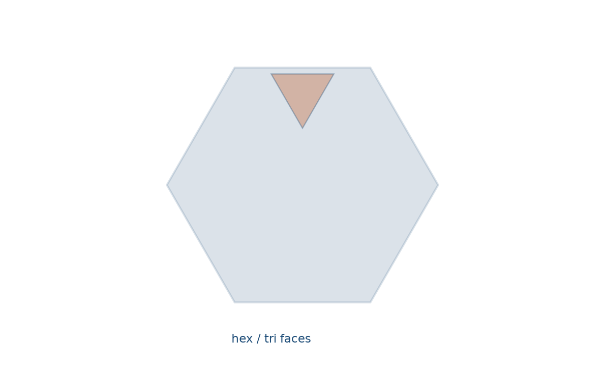
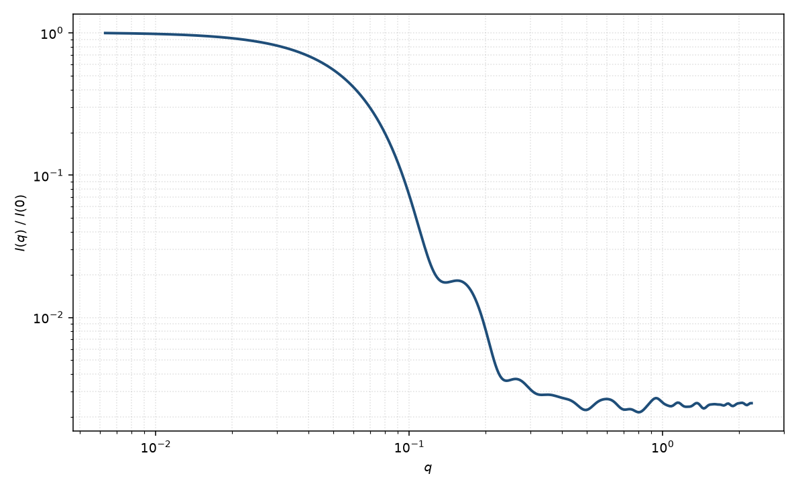

截角四面体
truncated tetrahedron
适用场景
正四面体切去四个顶点后的 Archimedean 截角四面体：4 个正六边形面与 4 个正三角形面。适用于截角四面体纳米晶、部分贵金属胶体，以及生长过程中顶点被溶蚀的四面体。
截断参数常用原棱上的截取比：完全截角（截到棱中点的三分之一处）给出正六边形；截得更少则六边形非正，并更接近原四面体。截得过多会变成八面体取向的多面体，应改用截角八面体或超球。
物理图像
几何是凸多面体，振幅仍用顶点/面闭式或体内积分。截角增大体积相对原四面体减小，并把最尖锐的顶点散射去掉，高 $q$ 振荡相对正四面体更接近球。示意图 $I(q)$ 为截角体内均匀点的 Debye 粉末平均。
Wulff 构造中 {111} 与截角面的相对面积由表面能比决定；本模型只覆盖均匀 SLD 的理想 Archimedean 体，不含晶面衬度差。
示意图


核心公式
出发点
稀释、取向无规的均匀粒子，相干散射振幅是特征函数的傅里叶变换
$$F(\mathbf{q})=\Delta\rho\int_{V_{\mathrm{tr}}} \mathrm{e}^{i\mathbf{q}\cdot\mathbf{r}}\,\mathrm{d}^3r.$$截角四面体由正四面体切去四个顶点得到。沿每条原棱截去比例 $\tau$（Archimedean 完全截角 $\tau=1/3$），剩余 4 个六边形面与 4 个三角形面。
推导
与任意凸多面体相同：因 $\nabla\cdot(\mathbf{q}\,\mathrm{e}^{i\mathbf{q}\cdot\mathbf{r}})=i q^2\mathrm{e}^{i\mathbf{q}\cdot\mathbf{r}}$，散度定理把体积分降到面上；面上再把面积分化为边积分。直边上相位线性，故出现 $\mathrm{sinc}$：
$$F(\mathbf{q})=\frac{\Delta\rho}{i q^2}\sum_f(\mathbf{q}\cdot\hat{\mathbf{n}}_f)\,f_f(\mathbf{q}),$$ $$f_f(\mathbf{q})=\frac{1}{i q_\parallel^2}\sum_{j\in\partial f}(\mathbf{q}_\parallel\cdot\hat{\boldsymbol{\nu}}_j)|\mathbf{L}_j|\,\mathrm{e}^{i\mathbf{q}\cdot\mathbf{c}_j}\,\mathrm{sinc}\!\left(\frac{\mathbf{q}\cdot\mathbf{L}_j}{2}\right).$$完全截角时 8 张面、18 条棱。体积也可由原四面体减去四个相似小四面体得到：小四面体棱长 $\tau a$，故
$$V=V_{\mathrm{tet}}(1-4\tau^3),\qquad V_{\mathrm{tet}}=a^3\sqrt{2}/12.$$$\tau=1/3$ 时 $V=23 V_{\mathrm{tet}}/27$。粉末平均等价于 Debye 双重体积分（图中 $I(q)$ 用此求值）。稀释 $I(q)=n(\Delta\rho)^2 V^2 P(q)+B$。
低 $q$ 与渐近
质心仍在原点。用平行轴定理扣除四个小四面体：小体质心在 $(1-\tau)\mathbf{v}$，$|\mathbf{v}|=\sqrt{6}\,a/4$ 为原顶点距，小体自身 $R_{g,\mathrm{s}}^2=3(\tau a)^2/40$。于是
$$R_g^2=\frac{\displaystyle\frac{3a^2}{40}-4\tau^3\left[\frac{3\tau^2 a^2}{40}+(1-\tau)^2\frac{3a^2}{8}\right]}{1-4\tau^3}.$$Archimedean $\tau=1/3$ 时 $R_g^2=53 a^2/920$。$\tau\to 0$ 回到正四面体 $3a^2/40$。Guinier 指数形式在 $qR_g\lesssim 1$ 可用。
截去顶点去掉最远的质量，高 $q$ 振荡相对正四面体更接近球。尖锐面仍给出 Porod $q^{-4}$；$\tau$ 与尺寸多分散都浅化极小。
参数表
| 参数 | 符号 | 含义 | 单位 | 典型范围 |
|---|---|---|---|---|
| 原边长 | $a$ | 未截角四面体的棱长（或外接尺度） | Å 或 nm | 20–1000 Å |
| 截断比 | $\tau$ | 沿棱截去的比例；Archimedean 为 $1/3$ | 无量纲 | 0–0.5 |
| 欧拉角 | $\theta,\phi,\psi$ | 多面体取向（二维） | 度 | 由取向分布约束 |
| 衬度 | $\Delta\rho$ | 均匀体相对溶剂 SLD 差 | Å$^{-2}$ | 组成决定 |
| 标度 / 本底 | $\mathrm{scale}$, $B$ | 前置因子与本底 | 与强度单位一致 | 实验相关 |
拟合注意
$\tau$ 与尺寸多分散都浅化振荡。一维上截角四面体、截角八面体与高 $p$ 超球容易换装；必须有电镜面型（三角+六边 vs 方+六边）才能放开 $\tau$。
取向：截角后更接近等轴，粉末平均通常够用；二维仍可能看到面法向弧。磁性：不同晶面的磁死层厚度可以不同，不能只用一个磁边长。
相近模型
参考文献
- Croset, B. Form factor of any polyhedron: a general compact formula and its singularities. J. Appl. Cryst. 2017, 50, 1245–1255. DOI: 10.1107/S1600576717010147
- Wuttke, J. Numerically stable form factor of any polygon and polyhedron. J. Appl. Cryst. 2021, 54, 580–587. DOI: 10.1107/S1600576721001710